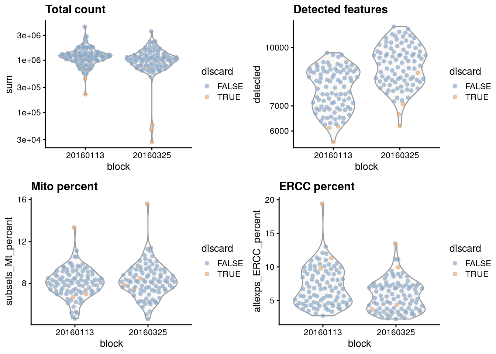
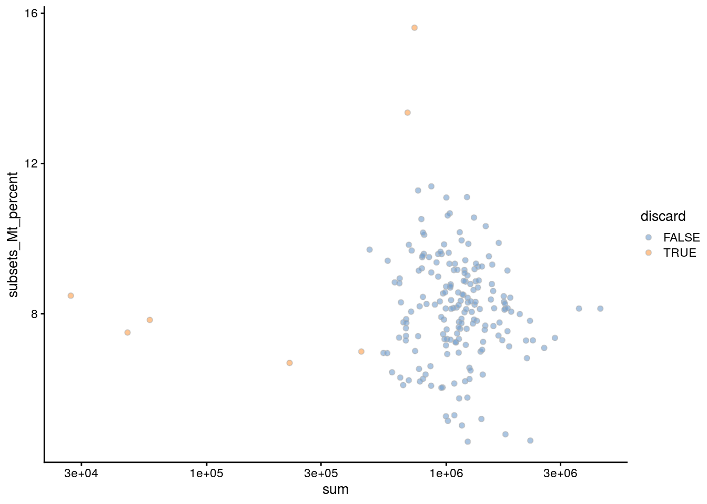
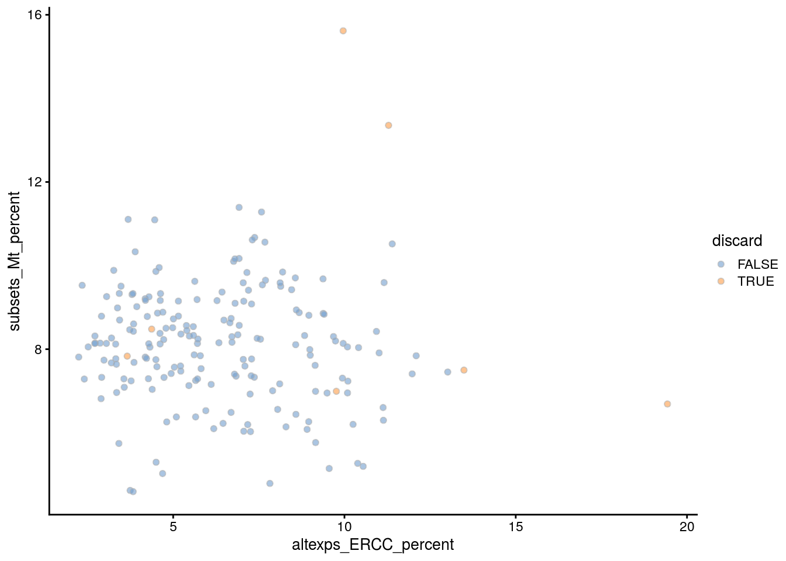
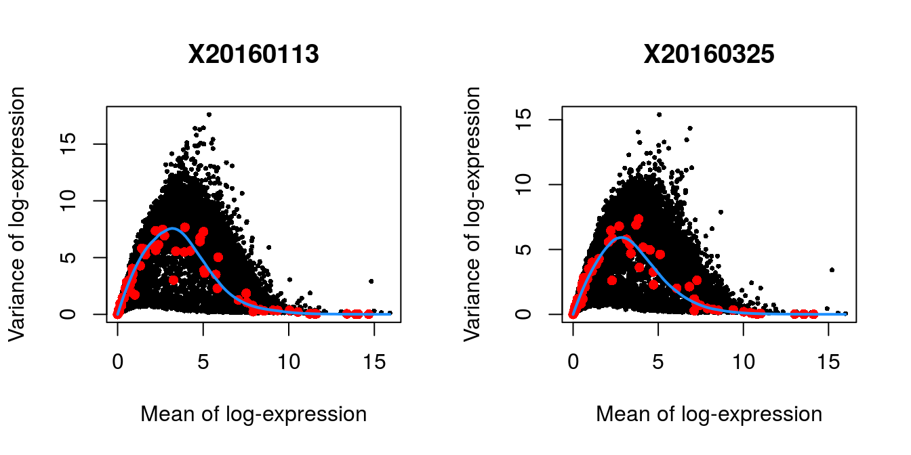
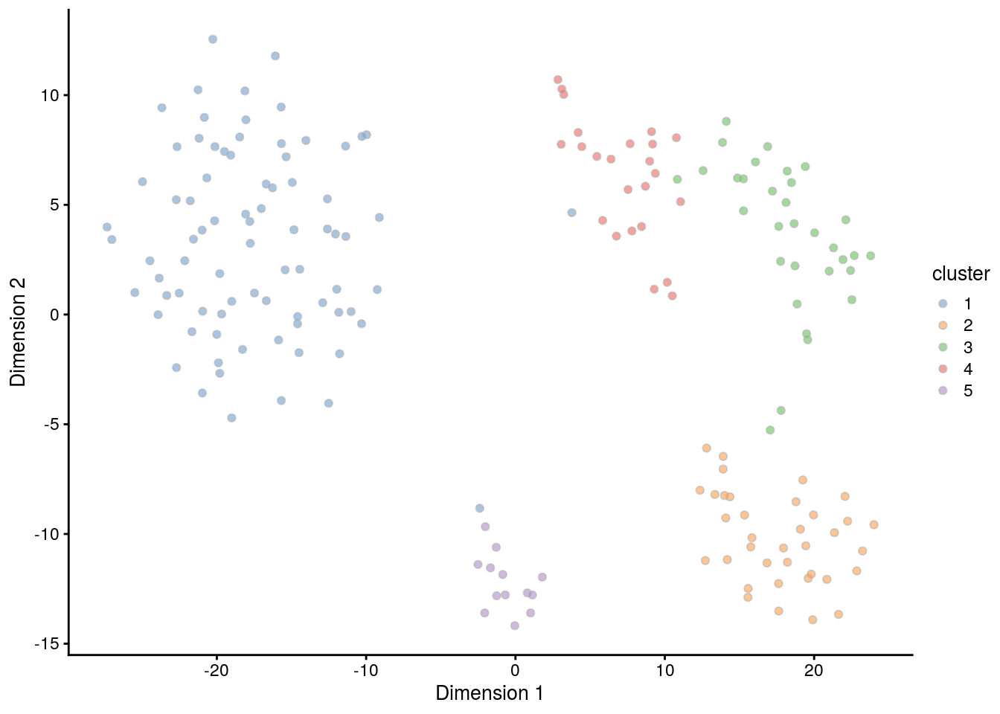
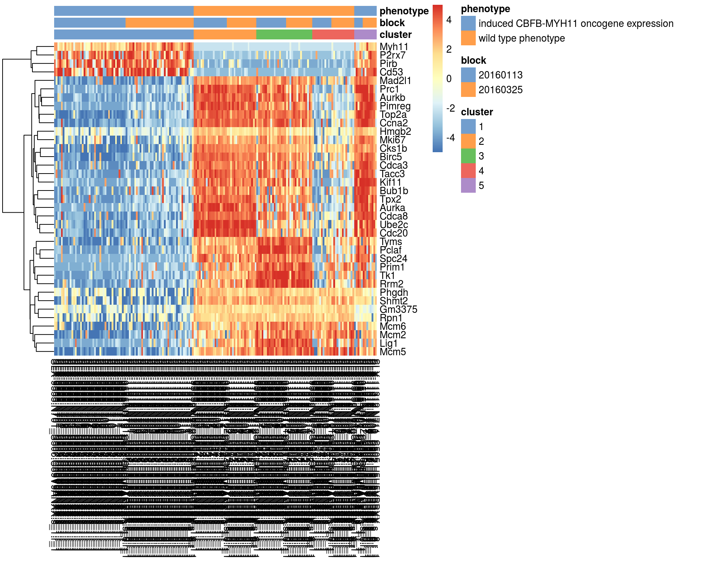

Chapter 20 416B Smart-seq2 dataset
20.1 Introduction
The A. T. L. Lun et al. (2017) dataset contains two 96-well plates of 416B cells (an immortalized mouse myeloid progenitor cell line), processed using the Smart-seq2 protocol (Picelli et al. 2014). A constant amount of spike-in RNA from the External RNA Controls Consortium (ERCC) was also added to each cell’s lysate prior to library preparation. High-throughput sequencing was performed and the expression of each gene was quantified by counting the total number of reads mapped to its exonic regions. Similarly, the quantity of each spike-in transcript was measured by counting the number of reads mapped to the spike-in reference sequences.
20.2 Analysis code
20.2.1 Data loading
20.2.2 Gene annotation
Ensembl identifiers are stable but difficult to interpret compared to the gene symbols.
Thus, we obtain the symbols corresponding to each row using the relevant annotation package.
We also rename the rows of our SingleCellExperiment with the symbols, reverting to Ensembl identifiers for missing or duplicate symbols.
library(AnnotationHub)
ens.mm.v97 <- AnnotationHub()[["AH73905"]]
rowData(sce.416b)$ENSEMBL <- rownames(sce.416b)
rowData(sce.416b)$SYMBOL <- mapIds(ens.mm.v97, keys=rownames(sce.416b),
keytype="GENEID", column="SYMBOL")
rowData(sce.416b)$SEQNAME <- mapIds(ens.mm.v97, keys=rownames(sce.416b),
keytype="GENEID", column="SEQNAME")
library(scater)
rownames(sce.416b) <- uniquifyFeatureNames(rowData(sce.416b)$ENSEMBL,
rowData(sce.416b)$SYMBOL)20.2.3 Quality control
We save an unfiltered copy of the SingleCellExperiment for later use.
Technically, we do not need to use the mitochondrial proportions as we already have the spike-in proportions (which serve a similar purpose) for this dataset. However, it probably doesn’t do any harm to include it anyway.
20.2.4 Normalization
No pre-clustering is performed here, as the dataset is small and all cells are derived from the same cell line anyway.
20.2.5 Variance modelling
We block on the plate of origin to minimize plate effects.
20.2.6 Batch correction
The composition of cells is expected to be the same across the two plates,
hence the use of removeBatchEffect() rather than more complex methods.
In fact, in situations where it is applicable, linear regression is the most statistically efficient
as it uses information from all cells to compute the common batch vector.
20.2.7 Dimensionality reduction
denoisePCA() automatically does its own feature selection,
so further subsetting is not strictly required unless we wanted to be more stringent.
We use an exact SVD to avoid warnings from irlba about handling small datasets.
20.3 Results
20.3.1 Quality control statistics
colData(unfiltered) <- cbind(colData(unfiltered), stats)
unfiltered$block <- factor(unfiltered$block)
unfiltered$discard <- qc$discard
gridExtra::grid.arrange(
plotColData(unfiltered, x="block", y="sum",
colour_by="discard") + scale_y_log10() + ggtitle("Total count"),
plotColData(unfiltered, x="block", y="detected",
colour_by="discard") + scale_y_log10() + ggtitle("Detected features"),
plotColData(unfiltered, x="block", y="subsets_Mt_percent",
colour_by="discard") + ggtitle("Mito percent"),
plotColData(unfiltered, x="block", y="altexps_ERCC_percent",
colour_by="discard") + ggtitle("ERCC percent"),
nrow=2,
ncol=2
)


## low_lib_size low_n_features
## 5 0
## high_subsets_Mt_percent high_altexps_ERCC_percent
## 2 2
## discard
## 720.3.2 Normalization
## Min. 1st Qu. Median Mean 3rd Qu. Max.
## 0.35 0.71 0.92 1.00 1.15 3.60We see that the induced cells have size factors that are systematically shifted from the uninduced cells, consistent with the presence of a composition bias.
plot(librarySizeFactors(sce.416b), sizeFactors(sce.416b), pch=16,
xlab="Library size factors", ylab="Deconvolution factors",
col=c("black", "red")[grepl("induced", sce.416b$phenotype)+1],
log="xy")
20.3.3 Variance modelling
par(mfrow=c(1,2))
blocked.stats <- dec.416b$per.block
for (i in colnames(blocked.stats)) {
current <- blocked.stats[[i]]
plot(current$mean, current$total, main=i, pch=16, cex=0.5,
xlab="Mean of log-expression", ylab="Variance of log-expression")
curfit <- metadata(current)
points(curfit$mean, curfit$var, col="red", pch=16)
curve(curfit$trend(x), col='dodgerblue', add=TRUE, lwd=2)
}
20.3.5 Clustering
We compare the clusters to the plate of origin. Each cluster is comprised of cells from both batches, indicating that the clustering is not driven by a batch effect.
## Plate
## Cluster 20160113 20160325
## 1 41 39
## 2 19 17
## 3 17 15
## 4 11 13
## 5 5 8We compare the clusters to the oncogene induction status. We observe differences in in the composition of each cluster, consistent with a biological effect of oncogene induction.
## Oncogene
## Cluster induced CBFB-MYH11 oncogene expression wild type phenotype
## 1 80 0
## 2 0 36
## 3 0 32
## 4 0 24
## 5 13 0
Most cells have relatively small positive widths in the silhouette plot below, indicating that the separation between clusters is weak. This may be symptomatic of over-clustering where clusters that are clearly defined on oncogene induction status are further split into subsets that are less well separated. Nonetheless, we will proceed with the current clustering scheme as it provides reasonable partitions for further characterization of heterogeneity.
library(cluster)
clust.col <- scater:::.get_palette("tableau10medium") # hidden scater colours
sil <- silhouette(my.clusters, dist = my.dist)
sil.cols <- clust.col[ifelse(sil[,3] > 0, sil[,1], sil[,2])]
sil.cols <- sil.cols[order(-sil[,1], sil[,3])]
plot(sil, main = paste(length(unique(my.clusters)), "clusters"),
border=sil.cols, col=sil.cols, do.col.sort=FALSE)
20.3.6 Interpretation
markers <- findMarkers(sce.416b, my.clusters, block=sce.416b$block)
marker.set <- markers[["1"]]
head(marker.set, 10)## DataFrame with 10 rows and 7 columns
## Top p.value FDR
## <integer> <numeric> <numeric>
## Aurkb 1 5.95332526213747e-73 2.77448770516654e-68
## Tk1 1 2.34968141049837e-60 1.82507587424777e-56
## Myh11 1 1.74075870733091e-49 6.24048606126538e-46
## Cdca8 1 1.64319374171929e-46 4.50467065524031e-43
## Pimreg 2 4.29719148373538e-65 1.00133155954001e-60
## Rrm2 2 2.35706313002577e-55 1.3731071263965e-51
## Cks1b 2 2.35198262477988e-39 2.88452100645372e-36
## Pirb 2 7.97867684167661e-35 5.38896022506513e-32
## Prc1 3 2.77571698479689e-62 4.31198381198247e-58
## Top2a 3 6.37981250851822e-55 3.30360869052204e-51
## logFC.2 logFC.3 logFC.4
## <numeric> <numeric> <numeric>
## Aurkb -7.38870232969503 -6.45246627887924 -1.94592909023535
## Tk1 -4.80008673423898 -7.49682898861993 -3.32419418408724
## Myh11 4.37171208286236 4.34848334450097 4.43794171786636
## Cdca8 -6.88029151809243 -4.80356837704285 -2.27453901288709
## Pimreg -7.31631659124917 -5.64211249589388 -0.898043903209096
## Rrm2 -5.46946590602491 -7.73120719658484 -2.60268226552795
## Cks1b -6.71963646641467 -5.85265581679635 -4.25406582958887
## Pirb 5.1993790781606 5.32023696598345 5.85826261355943
## Prc1 -7.02970492135388 -5.45842471653223 -0.397100497816819
## Top2a -7.27863861505773 -7.07670103720884 -2.00748152103728
## logFC.5
## <numeric>
## Aurkb -6.91352870202181
## Tk1 -4.63536765455945
## Myh11 1.03450086628779
## Cdca8 -7.1294117129039
## Pimreg -7.02015527046628
## Rrm2 -5.43021338684748
## Cks1b -6.21893354494391
## Pirb 0.0649700605553113
## Prc1 -6.95949488593924
## Top2a -7.43282374973199We visualize the expression profiles of the top candidates in the heatmap below to verify that the DE signature is robust. Most of the top markers have strong and consistent up- or downregulation in cells of cluster 1 compared to some or all of the other clusters. A cursory examination of the heatmap indicates that cluster 1 contains oncogene-induced cells with strong downregulation of DNA replication and cell cycle genes. This is consistent with the potential induction of senescence as an anti-tumorigenic response (Wajapeyee et al. 2010).
top.markers <- rownames(marker.set)[marker.set$Top <= 10]
plotHeatmap(sce.416b, features=top.markers, columns=order(sce.416b$cluster),
colour_columns_by=c("cluster", "block", "phenotype"),
cluster_cols=FALSE, center=TRUE, symmetric=TRUE, zlim=c(-5, 5)) 
Bibliography
Lun, A. T. L., F. J. Calero-Nieto, L. Haim-Vilmovsky, B. Gottgens, and J. C. Marioni. 2017. “Assessing the reliability of spike-in normalization for analyses of single-cell RNA sequencing data.” Genome Res. 27 (11):1795–1806.
Picelli, S., O. R. Faridani, A. K. Bjorklund, G. Winberg, S. Sagasser, and R. Sandberg. 2014. “Full-length RNA-seq from single cells using Smart-seq2.” Nat Protoc 9 (1):171–81.
Wajapeyee, N., S. Z. Wang, R. W. Serra, P. D. Solomon, A. Nagarajan, X. Zhu, and M. R. Green. 2010. “Senescence induction in human fibroblasts and hematopoietic progenitors by leukemogenic fusion proteins.” Blood 115 (24):5057–60.